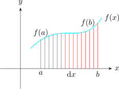

23.1 Fundamental Theorem of Calculus
Theorem 23.3 (Fundamental theorem of calculus). If \(f\) is continuous on \([a,b]\) and \(F\) is any anti-derivative of \(f\), so that \(F'=f\), then \[\int ^{b}_{a} f(x)\,dx = F(b)-F(a).\]
Note 23.4. This is the result that makes the whole subject work, and it is worth pausing on. The left side is defined as a limit of sums — an area, built by slicing. The right side is a difference of two values of an anti-derivative, found by reversing differentiation. There is no obvious reason those two should be related at all, and the theorem says they are the same number.
The practical consequence is that areas need never be computed by summing slices. Finding one anti-derivative and subtracting two of its values replaces an infinite process with two substitutions.
Note that any anti-derivative will do. If \(F\) is replaced by \(F+c\) the constant appears twice and cancels: \((F(b)+c)-(F(a)+c)=F(b)-F(a)\).
In particular
- \(\hspace {0.3cm} \displaystyle {\int ^b_a f(x)\hspace {0.1cm}dx = F(b) - F(a) = \hspace {0.2cm}\text {Area}}\)
- \(\hspace {0.3cm}\displaystyle {\int ^b_a f(x)\hspace {0.1cm}dx - \hspace {0.3cm}}\) is called integral
- \(\hspace {0.3cm}\displaystyle {\int ^b_a f(x)\hspace {0.1cm}dx = -\int ^a_b f(x)\hspace {0.1cm}dx}\)

Where the curve lies below the \(x\)-axis the integral is negative.
Note 23.5. Strictly it is the integral that is negative, not the area — an area is a positive quantity. The integral counts area below the axis with a minus sign, so for a curve crossing the axis the two parts partly cancel and \(\int _{a}^{b}f(x)\,dx\) gives the net signed area.
If the actual area enclosed is wanted, the integral must be split at each crossing and the absolute values added. For \(\int _{0}^{2\pi }\sin x\,dx\) the answer is \(0\), because the hump above the axis and the trough below cancel exactly, while the area between the curve and the axis is \(4\).
\begin {align*} \lim \limits _{dx \rightarrow 0}\sum ^1_0 x^2 = \int ^1_0 x^2\hspace {0.1cm}dx & = \Bigg [ \dfrac {x^{2 + 1}}{2 + 1} + c\Bigg ]^1_0\\\\ & = \Bigg [\dfrac {x^3}{3} + c\Bigg ]^1_0\\\\ & = \Bigg [\dfrac {1^3}{3} + c\Bigg ] - \Bigg [\dfrac {0^3}{3} + c\Bigg ]\\\\ & = \dfrac {1}{3} + c - 0 - c\\\ & = \dfrac {1}{3}\hspace {0.2cm}\text {units}\\\\ \end {align*}
Find the integral of
- 1.
- \(\hspace {0.3cm}\displaystyle {\int \cos 7x\hspace {0.1cm}dx}\)
Working
\(\displaystyle {\int \cos 7x\hspace {0.1cm}dx = \dfrac {\sin 7x}{7} + c}\)
- 2.
- \(\hspace {0.3cm}\displaystyle {\int ^{\pi /2}_0 \sin 3x\hspace {0.1cm}dx}\)
\begin {align*} \int ^{\pi /2}_0 \sin 3x\hspace {0.1cm}dx & = -\dfrac {\cos 3x}{3} + c\Bigg ]^{\dfrac {\pi }{2}}_0\\\\ & = \dfrac {-\cos \Big (\dfrac {3\pi }{2}\Big )}{3} - \Bigg [ \dfrac {-\cos 0}{3}\Bigg ]\\\ & = 0 - \Big (-\dfrac {1}{3}\Big )\\ & = \dfrac {1}{3}\\\\ \end {align*}
- \(\star \)
- Indefinite Integral: \(\hspace {0.4cm}\displaystyle {\int f(x) \hspace {0.2cm}dx = F(x) + c}\)
- \(\star \)
- Definite: \(\hspace {0.4cm} \displaystyle {\int ^b_a f(x)\hspace {0.1cm}dx = F(x)\Bigg |^b_a = F(b) - F(a)}\)
where \(\hspace {0.2cm} b\hspace {0.2cm}\) is the upper limit, \(\hspace {0.2cm}a\hspace {0.2cm}\) is the lower limit, \(\hspace {0.2cm}f(x)\hspace {0.2cm}\) is an integrand
Questions on this section
Stuck on something here? Ask below and it stays attached to this topic.